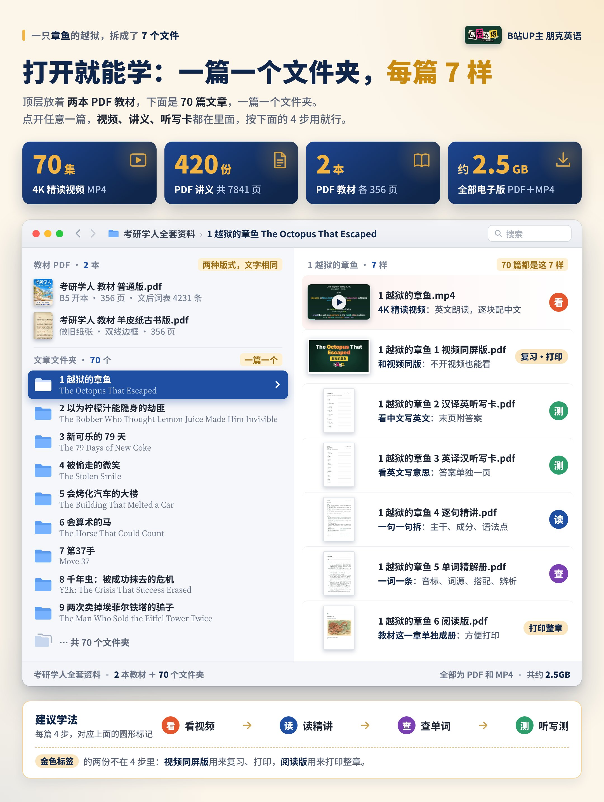
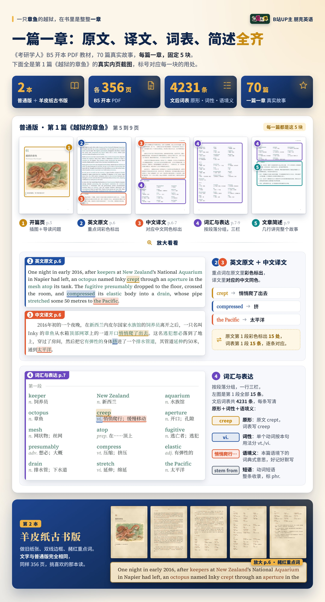
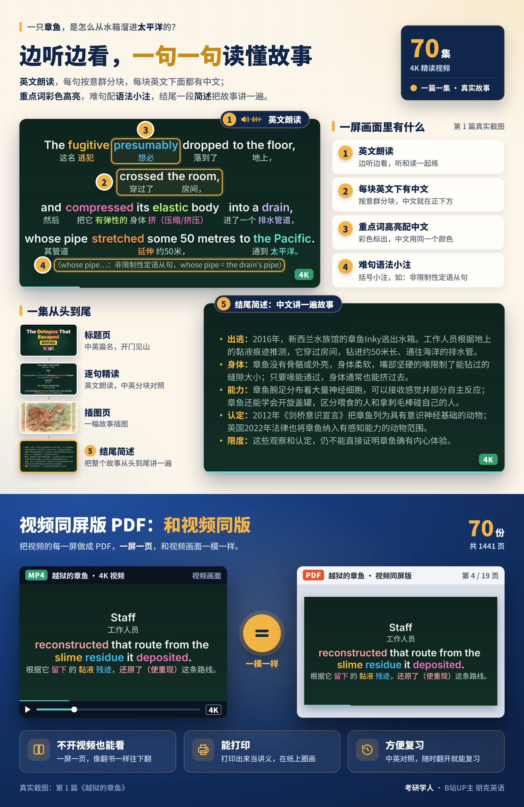
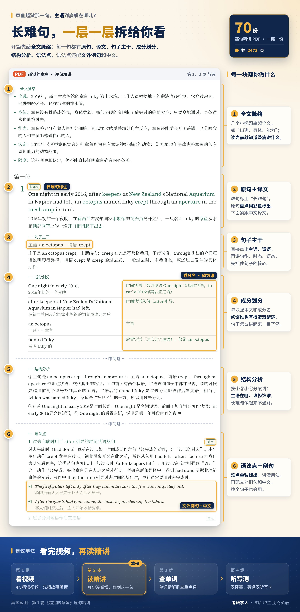
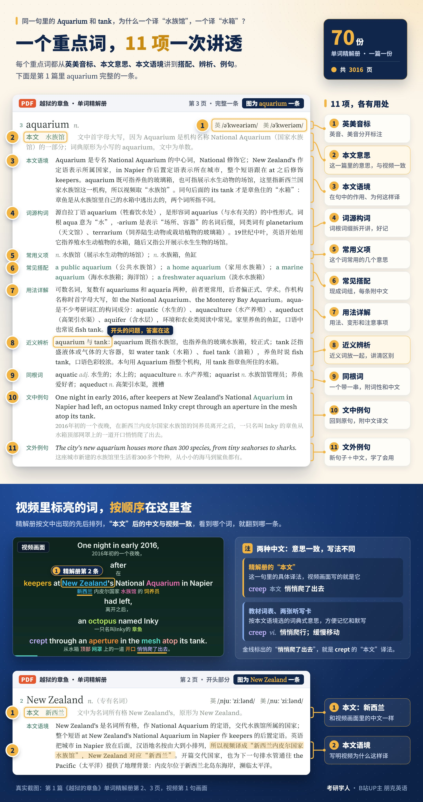
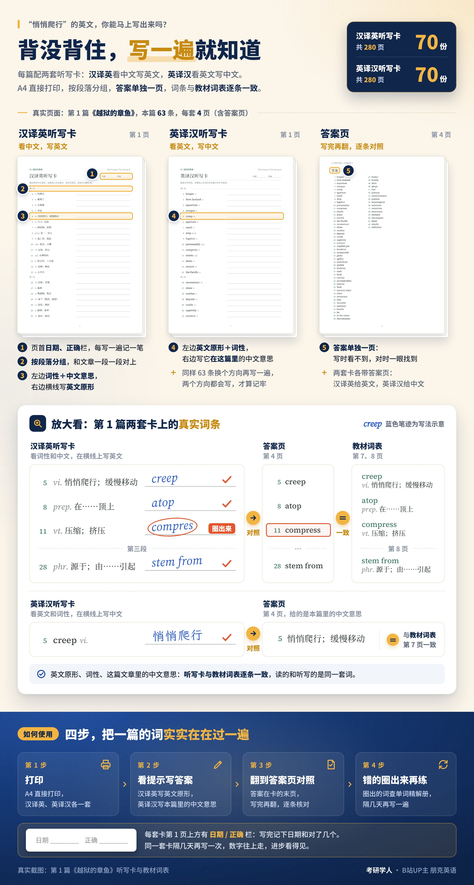
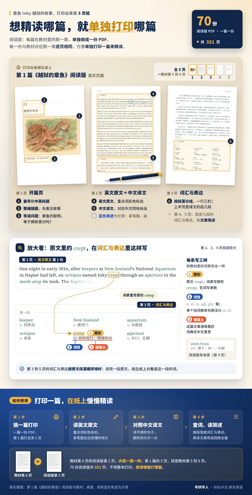
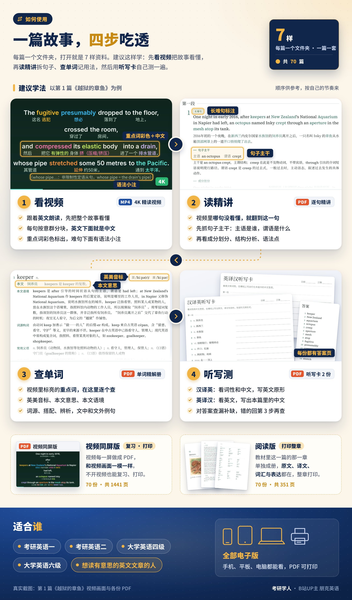
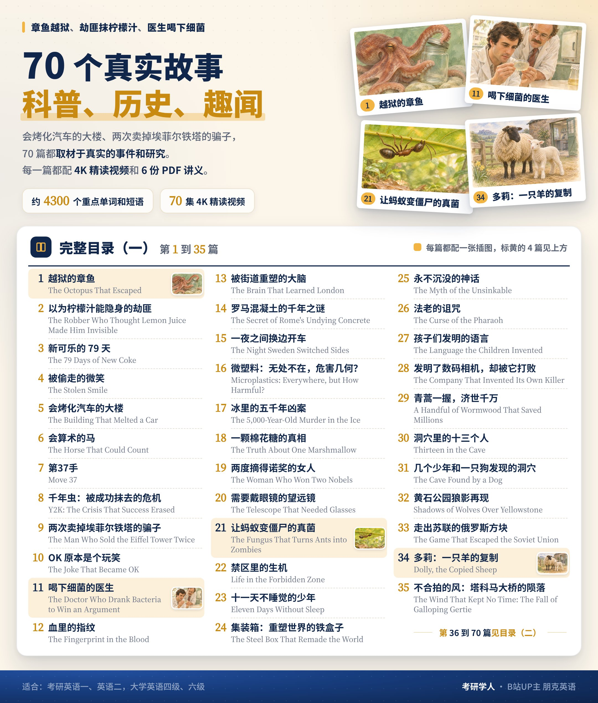
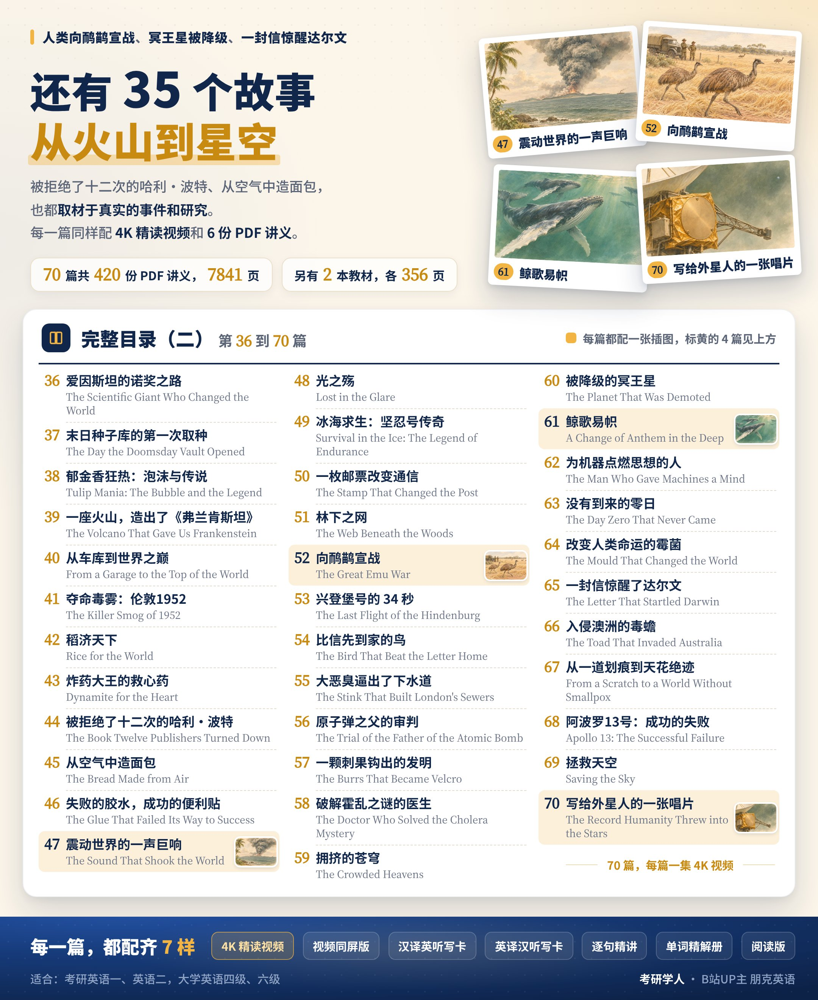

章鱼越狱、劫匪抹柠檬汁“隐身”：用70篇真实故事改编的文章学考研英语，4K精读视频＋7841页讲义一次配齐
70 篇真实故事改编的文章，每篇 7 样：1 个 4K 视频＋6 份 PDF，再加 2 本教材。
全部是电子版，约 2.5GB。价格：【价格】
购买链接：【购买链接】
大家好，我是 B站UP主 朋克英语。
这篇帖子有点长，但每一段都在讲具体的东西：我会把《考研学人》全套资料当着你的面拆开，一个文件一个文件告诉你，它是什么、里面有什么、能帮你解决什么、具体如何使用。
资料页面和视频画面截自资料本身；文件夹界面、索引列表、桌面背景和蓝色手写笔迹是示意。建议先收藏，再慢慢看。
不过开箱之前，先给你讲三个故事。
先讲三个故事
一只章鱼的越狱
2016 年初的一个夜晚，新西兰内皮尔国家水族馆的饲养员都下班了。
一只叫 Inky 的章鱼，从水箱顶上网罩的一道开口，悄悄爬了出来。它大概是先落到地上，穿过房间，再把软乎乎的身体挤进一根排水管。管子的另一头，是太平洋。
工作人员后来只能顺着它留下的黏液痕迹，一点点还原这条逃跑路线。Inky 从此不知去向。
文章结尾这一笔我特别喜欢：人们还在争论章鱼到底有没有意识，而 Inky 呢，在管道另一头的某个地方，对这场争论浑然不知。
抹了柠檬汁，就能隐身？
1995 年，有个劫匪和同伙在脸上抹了柠檬汁，大白天持枪连抢两家银行，不做任何乔装。他深信，这样摄像头就拍不到他。
理由听着还挺“科学”：柠檬汁能当隐形墨水，那抹在皮肤上，摄像头应该也拍不到吧？他甚至提前用宝丽来给自己拍了一张，照片洗出来，里面真的没有他。
监控摄像头可不这么想。录像在新闻里一播出，午夜刚过他就被捕了。看到录像，他完全不敢相信：我明明抹了柠檬汁啊！
故事还没完。一位心理学家读到这个案子，开始琢磨一个让人不安的问题：一个人会不会因为能力不够，连自己哪里不行都看不出来？他和学生一起做了研究，这就是后来大名鼎鼎的“邓宁-克鲁格效应”。
把埃菲尔铁塔卖了“两次”的骗子
六个做废金属生意的商人，在巴黎的克里雍酒店秘密碰头。一位邮电部的副总长私下告诉他们一个大消息：埃菲尔铁塔要当废铁卖了，请各位投标，每个人都得发誓保密。
借口还挺像回事：铁塔当年是为世博会建的，本来就计划过些年拆掉。可这位“副总长”其实是个骗子，手里那些部长信笺全是伪造的。
居然真有人信了。中标的商人付了钱，还额外塞了一笔贿赂。被骗之后，他觉得太丢人，连警都没报。
标题说他卖了“两次”。读到文章后半段你会发现，那个被反复传说的“第二次”，真相和你想的不太一样。
这些故事，就是我给你准备的考研英语
讲到这儿你可能想问：这和考研有什么关系？
关系大了。上面三个故事，分别是《考研学人》的第 1 篇《越狱的章鱼》、第 2 篇《以为柠檬汁能隐身的劫匪》和第 9 篇《两次卖掉埃菲尔铁塔的骗子》。
“章鱼悄悄爬出水箱”那一段，英文原文的第 1 句是这样的：
One night in early 2016, after keepers at New Zealand's National Aquarium in Napier had left, an octopus named Inky crept through an aperture in the mesh atop its tank.
2016年初的一个夜晚，在新西兰内皮尔国家水族馆的饲养员离开之后，一只名叫 Inky 的章鱼从水箱顶部网罩上的一道开口悄悄爬了出去。
一句话里，crept、aperture、mesh、atop 都是重点词；前面两个逗号把主语推到了句子中间，还藏着一个过去完成时、一个过去分词作后置定语。生词查完了，连起来还是读不顺，这不就是考研阅读里天天碰到的长难句吗？
单词靠硬背，记得快，忘得也快。放进一个让你忍不住想问“然后呢？”的故事里，它会跟着情节一起留在脑子里。
所以《考研学人》一共收了 70 篇文章，都取材于真实的事件和研究，科普、历史、趣闻都有；每一篇都配齐视频、讲义和练习，做成了这一整套。它要帮你解决的，是备考英语时这三个老大难：
- 单词背了就忘：词放在故事里学，单词精解册把它讲透，再用听写卡测一遍；
- 长难句看不懂：视频先带你看懂，逐句精讲再一句一句拆开；
- 资料散乱对不上：所有文件都围着同一篇文章做，视频、讲义、词表、听写卡互相对得上。
一分钟看懂：这套资料一共有什么
全部是电子文档（PDF 和 MP4），总大小约 2.5GB。先看总账：
| 内容 | 格式 | 全套数量 |
|---|---|---|
| 《考研学人》教材（普通版、羊皮纸古书版） | PDF，B5 开本 | 2 本，各 356 页 |
| 4K 精读视频 | MP4 | 70 集 |
| 视频同屏版 | 70 份，共 1441 页 | |
| 汉译英听写卡 | PDF，A4 | 70 份，共 280 页 |
| 英译汉听写卡 | PDF，A4 | 70 份，共 280 页 |
| 逐句精讲 | 70 份，共 2473 页 | |
| 单词精解册 | 70 份，共 3016 页 | |
| 阅读版 | 70 份，共 351 页 |
讲义部分合计 420 份 PDF，共 7841 页，这还没算两本教材。全书标出约 4300 个重点单词和短语，文后词表实列 4231 条。
看到这里心里已经有数的，可以直接入手：价格【价格】，购买链接【购买链接】。想再看看细节，接着往下，我一样一样拆开。
打开文件夹，你会看到这些

总文件夹叫“考研学人全套资料”，结构是这样的：
- 考研学人全套资料
- 考研学人 教材 普通版.pdf
- 考研学人 教材 羊皮纸古书版.pdf
- 1 越狱的章鱼 The Octopus That Escaped（文件夹）
- 1 越狱的章鱼.mp4：4K 精读视频
- 1 越狱的章鱼 1 视频同屏版.pdf：视频每一屏做成 PDF
- 1 越狱的章鱼 2 汉译英听写卡.pdf：看中文写英文
- 1 越狱的章鱼 3 英译汉听写卡.pdf：看英文写中文
- 1 越狱的章鱼 4 逐句精讲.pdf：每一句拆开讲
- 1 越狱的章鱼 5 单词精解册.pdf：每个重点词讲透
- 1 越狱的章鱼 6 阅读版.pdf：教材这一章单独成册
- 2 以为柠檬汁能隐身的劫匪 The Robber Who Thought Lemon Juice Made Him Invisible（文件夹）
- ……
- 70 写给外星人的一张唱片 The Record Humanity Threw into the Stars（文件夹）
一篇一个文件夹，名字就是“序号 中文标题 英文标题”。点开任何一个，里面都是同样的 7 样东西。今天学到哪篇，就点开哪篇，不用在一堆资料里翻来翻去。
下面我就拿第 1 篇《越狱的章鱼》做例子，从顶层的两本教材开始，一样一样拆开讲。
顶层两本：《考研学人》教材（普通版＋羊皮纸古书版）

它是什么：70 篇文章收进一本书，一篇就是一章。B5 开本，356 页。
里面有什么：每一章的顺序固定，5 块：
- 开篇页：篇号、中英标题、一张插图，还有一个导读问题。第 1 篇的导读问题是：“章鱼的聪明，等于拥有意识吗？”带着问题去读，注意力会集中很多。
- 英文原文：重点词彩色标出，哪些词要拿下，一眼就看到。
- 中文译文：读完英文，马上对照检查自己读懂了没有。
- 词汇与表达：按段落分组，三栏排列，顺着原文的先后。
- 文章简述：几行话把整个故事从头到尾讲一遍。
词表是怎么写的：文后词表一共 4231 条（前言里的说法是全书标出约 4300 个重点单词和短语）。每一条写清三件事：
- 英文原形：原文是 crept，词表写 creep；名词写单数；短语写词典形式，需要时带 sb/sth，比如 rob sb of sth；
- 词性：n. vt. vi. adj. adv. phr. 等，单个动词按这一句里的用法分 vt. 还是 vi.；
- 语境义：这个词在这篇文章语境里的词典式中文意思，比如 creep vi. 悄悄爬行；缓慢移动。
同一篇里原形和词性相同的合并成一条，不重复占你的时间。
为什么非要写“这篇里的意思”？前言里举过几个例子：在喝细菌的医生那一篇里，culture 是“培养”细菌；在会算术的马那一篇里，reason 是动词“推理”；stand for 要整体记作“代表”。词义放回句子里，才算真的学会。
两本有什么不同：文字完全相同，样子不同。
- 普通版：干净清爽，日常学习用；
- 羊皮纸古书版：做旧纸张、双线边框、赭红色重点词。喜欢翻古书那种感觉的同学，读起来会很有仪式感。
如何使用：想按顺序一篇篇往下读，就用教材；每学完一篇，翻到这一章的词汇与表达，把重点词再过一遍。两本都给你，喜欢哪本用哪本。
每篇 7 样，逐个拆开
① 4K 精读视频（70 集）
文件名：1 越狱的章鱼.mp4

它是什么：整套资料的主菜。一篇一集，一共 70 集，4K 画质。
里面有什么：
- 英文朗读：整篇文章一句一句读给你听，边听边看。
- 按意群分块，每块英文下面就是中文：长句切成一块一块，眼睛往下一扫就懂，不用在原文和译文之间来回找。
- 重点词彩色高亮，并配中文意思：比如 fugitive 下面是“逃犯”，presumably 下面是“想必”，中文意思和英文用同一种颜色，一眼就对上。
- 难句下面有语法小注：写在括号里，哪里难就在哪里点一下。比如 whose pipe 那一句，下面注着“whose pipe…：非限制性定语从句，whose pipe = the drain's pipe”。
- 首尾完整：有标题页、插图页；结尾还有一段“简述”，按“出逃、身体、能力、认定、限度”把整个故事从头到尾再讲一遍，帮你把全篇串起来。
解决什么：长难句难，难在找不到骨架。视频先帮你把每一句看懂，把整个故事看明白。
如何使用：头一遍不暂停，跟着英文朗读把故事看完；第二遍回到卡住的那几句，一屏一屏停下来细看；再往后，可以遮住中文只看英文，测测自己。
② 视频同屏版（70 份，共 1441 页）
文件名：1 越狱的章鱼 1 视频同屏版.pdf
它是什么：把视频里的每一屏原样做成 PDF，一屏一页，和视频画面同版，一模一样。上面那张图的下半部分，就是视频和 PDF 的对照。
解决什么：
- 宿舍、图书馆、通勤路上不方便开声音，翻 PDF 照样能看，画面上的内容一样不落；
- 想回看某一句，不用拖进度条，直接翻到那一页；
- 喜欢纸质的，打印出来，在纸上圈圈画画。
如何使用：看完视频，复习就交给它，哪屏没记住就翻哪屏。
③ 逐句精讲（70 份，共 2473 页）
文件名：1 越狱的章鱼 4 逐句精讲.pdf

它是什么：看完视频觉得“大概懂了”，逐句精讲负责让你“真懂了”。整篇文章，一句一句拆给你看。
里面有什么：每份开头先给“全文脉络”，第 1 篇是“出逃、身体、能力、认定、限度”五块，读之前心里先有一张地图。然后每一句都按同样的顺序讲：
- 原句：重点词彩色。难句会标上“长难句”，不是每一句都标，哪几句要重点啃，一眼就看到；
- 中文译文；
- 句子主干：主语、谓语单独拎出来；
- 成分划分表：把句子切成块，每块配中文，再写明是什么成分、修饰谁；
- 结构分析：讲清这些成分是怎么一层层搭起来的；
- 语法点：难点单独标出，讲清用法，再配文外例句和中文。
拿开头那句章鱼举例，精讲是这样拆的。
句子主干：主语 an octopus，谓语 crept。主语前面那一大串，是两个时间状语。
成分划分表（这一句的完整表格）：
| 英文 | 中文 | 成分 |
|---|---|---|
| One night in early 2016, | 2016年初的一个夜晚 | 时间状语（名词短语 One night 直接作状语，in early 2016作其后置定语） |
| after keepers at New Zealand's National Aquarium in Napier had left, | 在新西兰内皮尔国家水族馆的饲养员离开之后 | 时间状语从句（after 引导） |
| an octopus | 一只……章鱼 | 主语 |
| named Inky | 名叫 Inky 的 | 后置定语（过去分词短语），修饰 an octopus |
| crept | 悄悄爬了出去 | 谓语 |
| through an aperture | 从……一道开口 | 地点状语（介词短语，表示爬行穿过的路径） |
| in the mesh | 网罩上的 | 后置定语（介词短语），修饰 an aperture |
| atop its tank. | 水箱顶部 | 后置定语（介词短语），修饰 the mesh |
结构分析里有一句话特别实用：“主句前面有两个状语，主语直到句子中部才出现，读的时候要越过前两个逗号找到真正的主语。”
语法点：这一句标出的难点之一是“过去完成时用于 after 引导的时间状语从句”。讲清用法之后，再配文外例句，换个句子巩固一次：
After the guests had gone home, the hosts began clearing the tables.
客人们回家之后，主人开始收拾餐桌。
如何使用：看完视频，回到卡住的句子。先遮住答案，自己找主语和谓语，再对照精讲。标了“长难句”的那几句，值得多拆两遍。长难句拆多了，你拿到任何一个长句，都会先去找主干。
④ 单词精解册（70 份，共 3016 页）
文件名：1 越狱的章鱼 5 单词精解册.pdf

它是什么：教材词表告诉你“这个词在这篇里是什么意思”，单词精解册把这个词的方方面面讲透。每篇的重点词按文中出现的先后排好，视频里标亮的词，在这里按顺序就能查到。
里面有什么：一个词一个词条，完整的一条有 11 项：
英美音标、本文意思、本文语境、词源构词、常用义项、常见搭配、用法详解、近义辨析、同根词、文中例句、文外例句。
上面那张图的大图，就是第 1 篇第 3 页上 aquarium 完整的一条。
先考考你：开头那句里的 Aquarium 和 tank，为什么一个译“水族馆”，一个译“水箱”？翻到 aquarium 这一条，近义辨析里写得明明白白：本句用 Aquarium 指整个机构，用 tank 指章鱼所住的水箱。本文语境里也讲了，这里的 Aquarium 指的是新西兰国家水族馆这个机构，所以视频取“水族馆”。
连地名也有自己的一条。New Zealand：n.（专有名词），英 /ˌnjuː ˈziːlənd/，美 /ˌnuː ˈziːlənd/，本文“新西兰”。
两种中文意思，各管一件事：
- 教材词表和两张听写卡：给的是词典式的语境义，比如 creep vi. 悄悄爬行；缓慢移动。写法规整，方便记忆和默写。
- 单词精解册的“本文”：给的是这一句里的具体译法，和视频、视频同屏版一致。还是 creep，这里写的是“悄悄爬了出去”。
两者意思一致，只是写法不同：一个让你记得住、默得出，一个让你回到句子里对得上。图的下半部分就是对照：上面是视频第 1 句的画面，下面是精解册第 2 页 New Zealand 这一条，“本文”后面的“新西兰”和视频画面上的中文一样。精解册里的词条也按出现顺序排：keeper、New Zealand、aquarium、octopus、creep……视频里先亮哪个词，精解册里就先讲哪个。
如何使用：不用从头背到尾。视频里哪个词卡住了，就翻到这一条，先看本文意思和本文语境，弄懂这一处；再看搭配、辨析和例句，把一个词学成一串。
⑤⑥ 汉译英听写卡、英译汉听写卡（各 70 份，各 280 页）
文件名：1 越狱的章鱼 2 汉译英听写卡.pdf、1 越狱的章鱼 3 英译汉听写卡.pdf

它是什么：光看不练，词永远是别人的。听写卡就是用来检验“到底背没背住”的。
里面有什么：
- 汉译英听写卡：A4 大小。左边给词性和中文意思，右边横线上写英文原形。页首写着要求：“看词性和中文意思，在横线上写出英文。单词写原形，短语写词典形式。”末页是答案。
- 英译汉听写卡：反过来，左边给英文原形和词性，右边写它在这篇文章里的中文意思，答案单独一页。
两种卡都按段落分组，和文章一段一段对上；页首都有“日期、正确”栏。第 1 篇一共 63 条，每张卡 4 页（含答案页）。看几条真实词条：
| 序号 | 英文 | 词性 | 中文意思 |
|---|---|---|---|
| 5 | creep | vi. | 悄悄爬行；缓慢移动 |
| 8 | atop | prep. | 在……顶上 |
| 11 | compress | vt. | 压缩；挤压 |
| 28 | stem from | phr. | 源于；由……引起 |
关键一点：听写卡和教材词表逐条一致。书上学什么，卡上就练什么，不多不少。
如何使用，四步：
- 打印出来，A4 直接打；
- 看提示，在横线上写答案；
- 翻到答案页对照；
- 错的圈出来，回单词精解册查一遍，隔几天再写一次。
每次在页首填上日期和对了几个。同一张卡多写几轮，数字往上走，进步看得见。
⑦ 阅读版（70 份，共 351 页）
文件名：1 越狱的章鱼 6 阅读版.pdf

它是什么：就是这一篇在教材里的那一章，单独做成一个 PDF。
里面有什么：开篇页、英文原文、中文译文、词汇与表达、文章简述，一章完整。
和教材一页一页对得上：第 1 篇的阅读版一共 5 页，就是教材的第 5 到 9 页，每一页的文字完全相同，词汇与表达也是教材里的同一份词表。70 份阅读版，每一份都用程序和教材对应的那一章逐页比对过。
如何使用：想打印一篇来读，不用去 356 页的教材里找页码，直接打印这一份。第 1 篇只有 5 页，夹在书包里随时读；读完翻到词汇与表达，把没记住的词勾出来，再去写听写卡。
一篇故事，四步吃透（建议学法）

7 样东西不会乱，按这个顺序用就行。下面是我建议的学法，你完全可以按自己的节奏调整：
- 看视频：跟着英文朗读，先把整个故事看懂，顺手留意高亮的重点词。
- 读精讲：视频里哪句没看懂，就翻到这一句，看主干、成分、结构和语法点。
- 查单词：眼生的词翻单词精解册，看本文语境、搭配和辨析。
- 听写测：汉译英、英译汉各写一遍，对答案，查漏补缺，错的回第 3 步再查。
另外两样是辅助：复习时翻视频同屏版，不开视频也能把整篇过一遍；想在纸上精读整章，就打印阅读版。
时间上，建议一天一篇或两天一篇，学稳了再加速。
把这几样放在一起看：视频同屏版和视频同版，阅读版就是教材那一章，听写卡和教材词表逐条一致，单词精解册的“本文意思”和视频一致。7 个文件，围着同一篇文章转。
学法就这四步。想今天就开始第 1 篇：价格【价格】，购买链接【购买链接】。
70 篇文章，好看才学得下去


背单词书难就难在坚持，因为太枯燥。读故事不一样，你会忍不住想知道后来怎么样了。单词就在你追故事的时候，一个一个进了脑子。
70 篇文章都取材于真实的事件和研究，科普、历史、趣闻都有。除了开头那三个，还有：喝下细菌的医生、让蚂蚁变僵尸的真菌、会烤化汽车的大楼、向鸸鹋宣战、被拒绝了十二次的哈利·波特、阿波罗13号：成功的失败、写给外星人的一张唱片……也有几篇讲的是传说和辟谣，比如法老的诅咒、永不沉没的神话，读完你会看到传说和真相差在哪里。
读完你还会忍不住多问一句：盲测胜出的新可乐，为什么 79 天后就让老配方重回货架？冥王星本身没有变，为什么丢了行星的身份？这些问题，书里都有答案。多问一句的习惯，做考研阅读时同样用得上。
70 个标题全在上面这两张图里：第 1 到 35 篇一张，第 36 到 70 篇一张。随便挑一个，你大概都会想点开看看结局。
适合谁
- 备考 考研英语一、英语二 的同学；
- 准备 大学英语四级、六级 的同学；
- 不考试，只是 想读点有意思的英文文章 的人。
用什么看
全部是电子版：MP4 视频加 PDF 文档，总大小约 2.5GB，下载前留够空间。手机、平板、电脑都能看，PDF 可以直接打印（教材是 B5，听写卡是 A4）。
质量是怎么把关的
资料多，怕的是粗糙。所以说说是怎么做的：
- 逐句精讲和单词精解册，每一份都是先写稿，再由另一组独立审校逐字段核对、改正，然后再过程序检查；
- 听写卡和教材词表逐条一致，不会出现卡上有、书里没有的词；
- 阅读版和教材对应的那一章，用程序逐页比对过，文字完全相同。
常见问题
Q：是纸质书吗？
A：不是。全部是电子文档（PDF 和 MP4），总共约 2.5GB。想要纸质的，PDF 可以自己打印。
Q：用手机能看吗？
A：能。手机、平板、电脑都能看视频和 PDF。全套约 2.5GB，下载建议用电脑。
Q：我基础一般，跟得上吗？
A：视频里每块英文下面都有中文，重点词配了中文意思，难句有语法小注；逐句精讲再把每一句拆成主干、成分和语法点。建议从第 1 篇开始，先看视频把故事看懂，再按四步往下走。
Q：考英语二、准备四六级也能用吗？
A：可以。这套资料适合考研英语一、英语二，也适合大学英语四级、六级，还有想读有意思英文文章的人。
Q：普通版和羊皮纸古书版有什么区别？
A：文字完全相同，区别在样子：羊皮纸古书版是做旧纸张、双线边框、赭红色重点词。两本都在全套里，喜欢哪本用哪本。
Q：一共有多少词？听写卡和书对得上吗？
A：全书标出约 4300 个重点单词和短语，文后词表实列 4231 条，每条都有原形、词性和这篇文章里的中文意思。听写卡和教材词表逐条一致，以第 1 篇为例，一共 63 条，书上有的，卡上都有。
Q：词表里的中文和视频里的中文，为什么写法不一样？
A：分工不同。教材词表和听写卡给词典式的语境义，比如 creep vi. 悄悄爬行；缓慢移动，方便记忆和默写；视频、视频同屏版和单词精解册的“本文”给这一句里的具体译法，比如“悄悄爬了出去”。两者意思一致，写法不同。
Q：要不要一次全部打印？
A：不用。电子版随时看，想在纸上做的部分（听写卡、阅读版）学到哪篇打印哪篇就行。
怎么入手
一次拿到全部内容：
- 《考研学人》教材 2 本（普通版、羊皮纸古书版），各 356 页；
- 4K 精读视频 70 集；
- 420 份 PDF 讲义，共 7841 页：视频同屏版、汉译英听写卡、英译汉听写卡、逐句精讲、单词精解册、阅读版，每篇各一份。
价格：【价格】
购买链接：【购买链接】
下单后怎么拿到资料
- 付款后，会发送下载链接给你。
- 全套分两个压缩包：
- 第 1 部分：两本教材＋第 1 到 35 篇；
- 第 2 部分：第 36 到 70 篇。
- 把两个压缩包解压到同一个位置，就会合成一个“考研学人全套资料”文件夹，里面的结构和前面那张文件夹图一样。
- 一共约 2.5GB，建议用电脑下载，先留够空间；下好之后，手机、平板、电脑都能看。
拿到之后，先打开第 1 集，去看看 Inky 是怎么从水箱里溜出去的。有问题欢迎评论区找我，我是 B站UP主 朋克英语。
全部为电子文档，一旦售出无法退款，谢谢理解。